State Council of Educational Research and Training (SCERT), Kerala
2025
Social Science
Part I
Standard VIII
Government of Kerala
Department of General Education
Prepared by
Page 1

Page 2

Prepared by
State Council of Educational Research and Training (SCERT)
Poojappura, Thiruvananthapuram 695012, Kerala
Website : www.scertkerala.gov.in, e-mail : scertkerala@gmail.com
Typeset and design by : SCERT
Printed at : KBPS, Kakkanad, Kochi-30
© Department of General Education, Government of Kerala
Jana-gana-mana adhinayaka, jaya he
Bharatha-bhagya-vidhata.
Punjab-Sindh-Gujarat-Maratha
Dravida-Utkala-Banga
Vindhya-Himachala-Yamuna-Ganga
Uchchala-Jaladhi-taranga
Tava subha name jage,
Tava subha asisa mage,
Gahe tava jaya gatha.
Jana-gana-mangala-dayaka jaya he
Bharatha-bhagya-vidhata
Jaya he, jaya he, jaya he,
Jaya jaya jaya jaya he!
The National Anthem
PLEDGE
Social Science
8
India is my country. All Indians are my brothers and sisters.
I love my country, and I am proud of its rich and varied
heritage. I shall always strive to be worthy of it.
I shall give my parents, teachers and all
elders, respect and treat everyone with courtesy.
To my country and my people. I pledge my devotion.
In their well-being and prosperity alone, lies my happiness.
Page 3

Beloved friends,
From the previous classes we could imbibe many things about the
vast world and the diverse social life through Social Science. Here,
we come across opportunities to understand further the history and
transformation of society. Novel knowledge about the vibrant past of the
motherland throws fresh light on our sense of history.
It reminds us of the invasions of India by the European countries for
centuries and the suppression of indigenous culture. This text book
includes the lessons about the history of the freedom struggle waged by
our valiant patriotic forefathers with sacrificial devotion to get freedom
from slavery and colonialism.
The details of the Earth’s motions such as rotation and revolution, and
their impact on life are also discussed. Besides, this text book covers
basic economic problems including the innumerable human needs and
how they can be met with the limited resources.
This text book will, indeed, be a guide to mould you as a value conscious
citizen who upholds liberty, equality and fraternity by highlighting the
laws, duties and rights enshrined in our constitution.
The influence of media on our society is also explained in the context
of recent important events. This text book is designed to build up the
ability to comprehend the relationship between media and society.
Social Science can help to develop national consciousness, self
understanding and to form new perspectives by recognising the society.
Designed with a foundation of great learning experiences to understand
the state of the world and to become an active citizen of the soceity,
Part 1 Social Science text book for Standard VIII is dedicated with the
confidence that it will help you to approach history enthusiastically and
gain new knowledge.
With love and regards,
Dr. Jayaprakash R. K.
Director
SCERT, Kerala
Page 4

Textbook Development Team
Advisor
Dr. K. N. Ganesh
Chairman, Kerala Council for
Historical Research
Chairperson
Dr. V. Shaharban
Assosciate Professor & Head, Department of
Economics, Kannur University
Dr. Anjana V. R. Chandran
Research Officer, SCERT Kerala
Dr. Akhil S.
H.S.S.T. Geography, G.H.S.S.,
Thazhathuvadakara, Kottayam
Ashraf M.
Principal (Rtd.), G.G.H.S.S.,
Adoor, Pathanamthitta
V. Kripalaj
H.S.T. Social Science, V.M.H.S.
Vadavannur, Palakkad
Leena P. S.
H.S.T., Social Science, S.N.H.S.S.
Uzhamalakkal, Nedumangad, Tvpm.
Experts
Experts
Members
Members
Dr. Anish V. R.
Assistant Professor, Department of
Political Science, S.A.R.B.T.M.
Govt. College, Koyilandy
Dr. B. Hariharan
Sr. Professor, Institute of English,
University of Kerala, Tvpm.
Bino P. Jose
Assistant Professor, Department
of History, St. Dominic’s College,
Kanjirapally
Dr. V. S. Visak
N.V.T. English,
Govt. V.H.S.S. Parassala, Tvpm.
Dr. Jayarajan K.
Associate Professor & Head
Department of Geography,
Govt. College Chittur, Palakkad
Seema Nair K. S.
H.S.S.T. English, G.V.H.S.S.
Vellinezhy, Palakkad
Dr. Anil D.
Research Officer, SCERT Kerala
Academic Coordinator
State Council of Educational Research and Training (SCERT)
Vidhyabhavan, Poojappura, Thiruvananthapuram 695 012
Shigi N. Dass
N.V.T. English, Govt. V.H.S.S.
Veeranakavu, Tvpm.
Jinju Gomez
H.S.S.T. HG English,
S.M.V.G.M.H.S.S., Tvpm.
Chandrasekharan P.
N.V.T. English (Rtd.), BNVVHSS
Thiruvallam, Tvpm.
Leeja Jacob V.
H.S.S.T. (Jr.) English, Govt. V&HSS
for the Deaf, Jagathy
Nitha S.
H.S.S.T. English, Govt. H.S.S.
Muzhappilangad, Kannur
English Translation
Dr. Priyanka P. U.
H.S.T. Social Science, G.H.S.S.
Neyyardam, Tvpm.
Pradeepkumar L.
H.S.S.T. Political Science, G.H.S.S.
Pattazhy, Kollam
P. C. Radhakrishnan
H.S.S.T. Sociology, G.H.S.S.,
Munnoorcode, Palakkad
Renjith Vellalloor
H.S.T. Social Science,
G.H.S.S., Kilimanoor,
Thiruvananthapuram
Rijukumar K. C.
H.S.S.T. History, G.H.S.S.,
Avitanallur, Kozhikode
Shareena K.
H.S.T. Social Science, G.H.S.S.,
Perinthalmanna, Malappuram
Sreejith M. Muthadath
H.S.T. Social Science, C.N.N.G.H.S.
Cherpu, Thrissur
Dr. Usha Rani K.
Assistant Professor,
Govt. College of Teacher
Education, Thiruvananthapuram
Page 5


Additional Reading:
Not subject to evaluation
Learning Activities
Let's Read
Extended Activities
Certain icons are used in this textbook for ease of study
Contents
Invasion
and Resistance
Towards the Emergence
of the National Movement
Movements of the Earth:
Rotation and Revolution
Basic Economic Problems
and the Economy
Constitution of India:
Rights and Duties
Resource Utilisation
and Sustainability
Media and
Social Reflections
1.
2.
3.
4.
5
6.
7.
7-26
27-42
43-58
59-72
73-86
87-102
103-118
Page 6

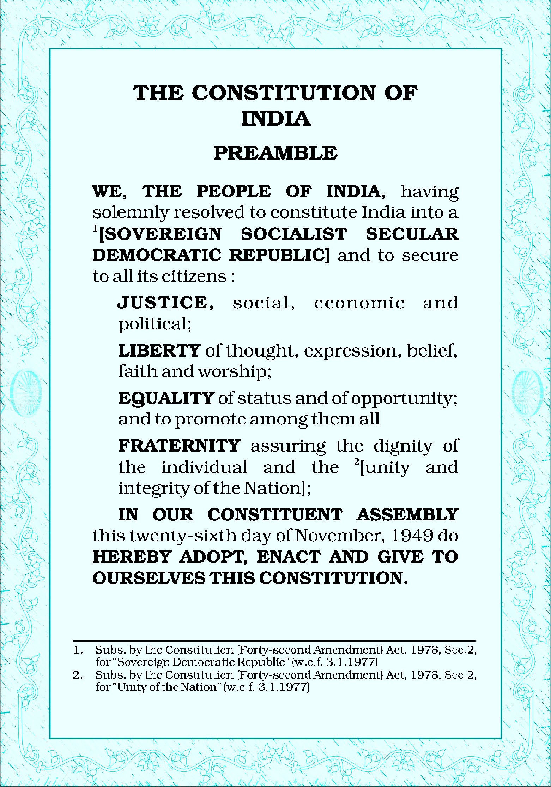
Page 7


Invasion
and Resistance
1
Unit
“In April 1601, the English East
India Company sent its first
expedition to the East Indies.
After some eighteen months
its four ships, Ascension,
Dragon, Hector and Susan,
had returned from Sumatra
and Java with a cargo mainly
of pepper. The success of
this venture led to a second
expedition by the same ships
which left London in March
1604. On the return journey,
Hector and Susan set off first,
but Susan was lost at sea
and Hector was rescued by
Ascension and Dragon... with
most of the crew dead. In May
1606, the ships loaded with a
cargo of pepper, cloves and
nutmegs reached England.
The Company made a profit of
95% on their investment.”
James Fulcher,
Capitalism: A Very Short Introduction.
Page 8

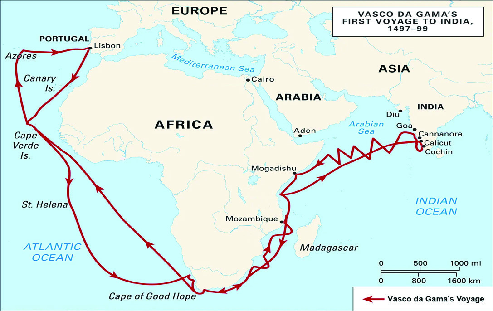
Social Science
Standard
8
Fig. 1.1 l Vasco da Gama’s journey to India.
After reading the above account, do you see how the English
East India Company in England, which later conquered India,
established trade links in the Eastern regions including
India?
Let us examine what prompted the English East India
Company to trade in such a difficult condition.
Europeans had trade relations with other parts of the world
from ancient times. Asia was also included in this. These
connections led to the discovery of an eastward sea route
from Europe by the end of the fifteenth century. The main
reasons for this are as follows:
l technological advances in European
shipbuilding and sailing
l growth in knowledge about geography
l advances made in compass and map making
l travel writings by voyagers provided
knowledge about new territories and their
wealth
l the commercial market for Asian products
like pepper in Europe
l conquest of Constantinople by the Turks
The Portuguese were the first Europeans to reach
India by sea. Vasco da Gama from Portugal was the
first to reach India by sea.
Constantinople
Constantinople was an
important hub between
Europe and Asia. This
was the link for the land
trade between Europe
and Asia. In 1453, the
Turks captured this
place which prevented
further European trade
using this hub. This
forced the Europeans to
find an alternate route.
Page 9


Invasion
and Resistance
9
Observe the map and find the following.
l the starting point of Vasco da Gama’s voyage
l the place where Vasco da Gama arrived
l the oceans and continents he traversed
Vasco da Gama
and his crew
reached India with
three ships named
Sao Gabriel, Sao
Raphael and
Berrio.
The ships
of Vasco
da Gama
The Kunjali Marakkars protected the Zamorin and the western coast
from the attacks of the Portuguese. Kunjali Marakkar was a designation.
Four people have occupied this position at different times. Kunjali III
defeated the Portuguese and captured Fort Chalium. Kunjali IV was
executed by the Portuguese in Goa. With the fall of the Kunjalis, the
decline of the Zamorin also began.
Kunjali Marakkar
Voyage of the Portuguese to India
In 1498, Vasco da Gama reached Kappad near Kozhikode.
His arrival paved the way for European dominance in India.
At that time Kozhikode was ruled by the Zamorin dynasty.
The Arabs controlled the foreign trade with Kozhikode. The
Zamorin did not accept the demand of the Portuguese to
expel the Arabs and grant them exclusive trading rights.
Following this, Vasco da Gama obtained permission for trade
from the then Kolathiri king of Kannur. He then returned to
Portugal after collecting products including pepper. Vasco
da Gama returned home with goods worth sixty times more
than the cost of his journey.
The profit generated in this journey encouraged the
Portuguese to make similar commercial trips to India.
The Zamorin did not give the Portuguese a monopoly in
trade. This led to conflicts between the Zamorin and the
Portuguese. The Portuguese had to face stiff resistance
from the Kunjali Marakkars, who were the naval chiefs
of the Zamorin. After the era of Kunjali Marakkars, the
Portuguese did not face much threat from India.
Page 10


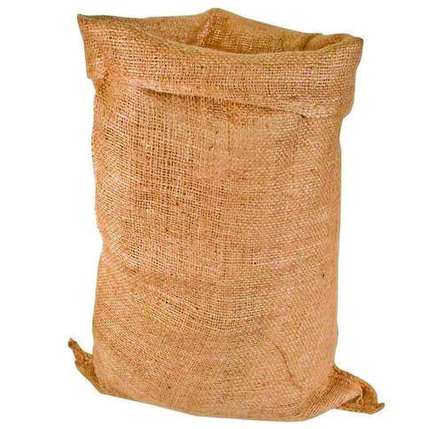
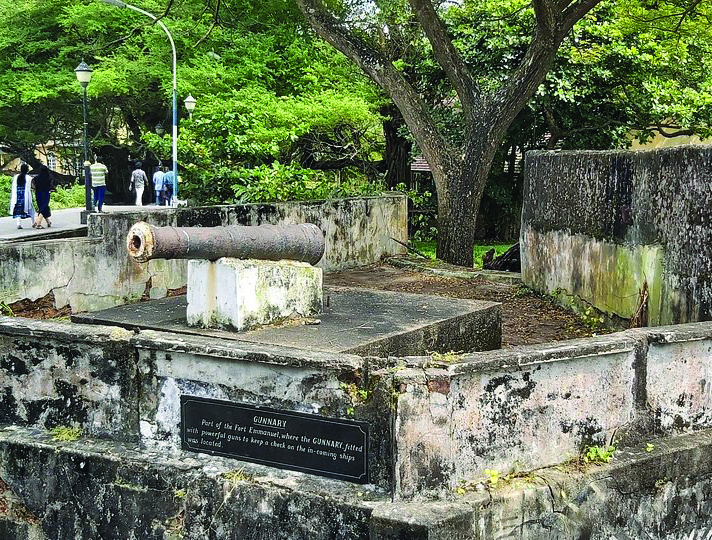
Social Science
Standard
10
Fig. 1.2 l Different Materials
Influence of the Portuguese in India.
Fig. 1.3 l A part of Fort Manuel
The contact between India
and the Portuguese resulted
in Malayalam receiving these
words from the Portuguese
language.
l cashew tree (parangi
mavu), papaya, guava
(perakka) and pineapple
were introduced.
Find and list the Malayalam names of the things given in the
picture.
l table (mesha)
l
l
l
l
l
Page 11


Invasion
and Resistance
11
l the first European Fort in India (Fort Manuel), was
established in Kochi
l the regions of Kochi, Goa, and Daman and Diu came
under the rule of the Portuguese
l printing technology was popularised
l art forms such as Chavittunatakam and Margamkali
were popularised
l European style of construction was started
l training was given in war tactics and European
weapons
l Christian religious education centres were started
Find out and list the impact of Portuguese contact in India in different
areas.
Political field
Agriculture sector
Knowledge sector
Cultural sector
Fig. 1.4 l Colachel War Memorial
The Dutch
The Europeans who came to India after the Portuguese were
from Holland (Netherlands). They are also known as the
Dutch. Nagapattinam, Bharuch, Ahmedabad and Chinsura
were the major trading centres of the Dutch in India. The
Dutch defeated the Portuguese in their competition for
monopoly in trade.
Battle of Colachel
In 1741, Marthandavarma who ruled Travancore clashed with
the Dutch at Colachel near Kanyakumari. With the defeat in
this war, the Dutch lost their supremacy in India. This was
the first battle in which a European power lost to an Indian
ruler.
Page 12


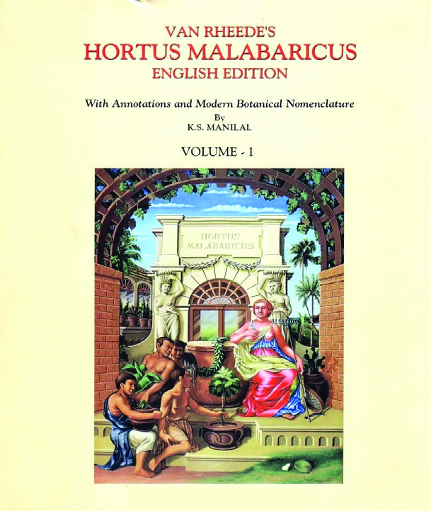
Social Science
Standard
12
Fig. 1.5 l Cover page of Hortus Malabaricus
This is a picture from Hortus
Malabaricus. Identify the plant.
l
Fig. 1.6 l A page from Hortus Malabaricus
Itti Achuthan
Itti Achuthan was an accomplished indigenous medical practitioner
born in Kadakarapalli village in Cherthala Taluk of the present-day
Alappuzha District in a traditional family of medical practitioners.
Hortus Malabaricus
The greatest contribution of the relationship with the
Dutch is the work Hortus Malabaricus. Information
about seven hundred and forty-two medicinal plants
of Kerala is presented in this book. Hendrik–van Rheed,
the then Dutch governor was the compiler of this work.
Itti Achuthan, an indigenous medical practitioner,
helped him in this composition. Appu Bhat, Ranga Bhat
and Vinayaka Bhat also contributed to the composition
of this work. Hortus Malabaricus was the first book
to be printed with some Malayalam words. This
work was translated into Malayalam and English by
Dr. K. S. Manilal.
The French
After the Dutch, the British (English) and then the French
came to India for trade. The wars fought between the British
and the French for dominance in South India are known as
the Carnatic Wars. The British won in this decisive war. As
a result, French dominance was reduced to Pondicherry
(Pudhucherry), Yanam, Karaikal and Mahe.
Page 13


Invasion
and Resistance
13
Look at the given map and find the major centres
under the control of the Portuguese, Dutch and
French.
Fig 1.7 l
Map not to scale
Portuguese occupied
territories
Dutch occupied
territories
French occupied
territories
l Kochi
l Nagapattinam
l Pondicherry
l
l
l
l
l
l
l
l
l
The wars fought
between the
British and the
French in India
are known as the
Carnatic Wars.
These battles
took place in the
Carnatic region
which included
a major portion
of the present-
day Tamil Nadu
and the coastal
areas of Southern
Andhra Pradesh.
There were three
Carnatic Wars.
Carnatic
Wars
From Trade to Power
We had a discussion on the English East Company at the
beginning of this lesson. The English East India Company
was established by the British in 1600 for trade with Asia.
Ahmedabad
Bharuch
Daman
Goa
Mahé
Kochi
Nagapattinam
Portuguese
Dutch
French
Karaikal
Pondicherry
Yanam
Chinsurah
Diu
Page 14


Social Science
Standard
14
The representative of the company, Captain William
Hawkins obtained permission from the then Mughal
Emperor Jahangir to set up a factory in Surat, Gujarat.
The company then started factories in different parts
of India. After gaining dominance in Madras (Chennai),
Bombay (Mumbai) and Calcutta (Kolkata) the Company
began to interfere in the administration of these
territories.
The British established political dominance in India
with the Battle of Plassey in 1757. The Nawab of Bengal,
Siraj-ud-Daulah was defeated in this battle by the
forces of the East India Company led by Robert Clive.
The conquest of Bengal helped the British to bring
other parts of India under their control. Land taxes in
agriculturally rich Bengal helped the British build up
their military power and raise money to conquer the
rest of the country. With the Battle of Buxar in 1764,
the company acquired the right to collect taxes in the
provinces of Bihar, Bengal and Orissa. With that, the
East India Company’s administrative presence in India
became stronger. The British defeated the combined
forces of the Mughal ruler Shah Alam II, the Nawab of
Oudh, Shuja-ud-Daulah and the Nawab of Bengal, Mir
Qasim in this battle.
Discuss how the Company attained
dominance in Madras, Bombay
and Calcutta and interfered in the
administration of these territories.
l In 1639 the native
king Damarla
Venkitadri Nayaka
ceded the port
of Madras to the
British for a long
period with the
condition that he
would get half of
the toll revenue of
the port.
l Bombay was gifted
to the British King
Charles II when
he married the
Portuguese princess
Catherine in
1662. It was later
handed over to the
English East India
Company.
l Fort William was
built by the British
in 1698 around the
three villages of
Sutanuti, Kalikata
and Gobindapur.
Gradually, the area
became a town and
came to be known
as Calcutta.
“Send me two thousand soldiers, I will conquer India.”
– Robert Clive
You have read the words of Robert Clive who was the
military commander of the English East India Company.
Why do you think he commented like this?
l disunity among Indian princely states
l military and technological supremacy of the
British
Page 15


Invasion
and Resistance
15
Fig. 1.8 l Tipu Sultan
Princely States and the Company
The princely states of India were subjugated by the British
through wars and diplomacy.
The Anglo-Mysore Wars were fought between the southern
princely state of Mysore and the English East India Company.
The Mysore army was led by Hyder Ali who was the ruler of
Mysore and his son Tipu Sultan. The Company army and the
Mysore Sultans clashed four times. After Hyder Ali’s death
in 1782, Tipu Sultan commanded the Mysore forces. In the
Fourth Mysore War of 1799, Mysore fell when Tipu Sultan
was killed by the Company forces.
The Anglo-Maratha Wars were fought between the English
East India Company and the Maratha Kingdom. With the
Third Anglo-Maratha War, the Maratha territories came
under the British control. With the defeat of the Sikhs in the
Anglo-Sikh Wars between the English East India Company
and the Sikhs, Punjab came under the British rule.
Prepare a flowchart of the main events of the English East India
Company’s dominance in India and display it in the class.
The aim of the British was to procure maximum wealth from
the conquered territories. The methods adopted by them
for this include trade, tax collection and wars.
The Tax Policies Implemented by the British
Tax
Implemented
areas
Executed
persons
Features
Permanent
Land Revenue
Settlement
(1793)
Bengal
Bihar
Orissa
Lord Cornwallis
l the zamindars who were
the landlords collected
high taxes on behalf of
the British
l farmers were required
to pay a fixed amount
as tax regardless of
fluctuations in yield
Page 16
Social Science
Standard
16
Ryotwari
System (1820)
South India
Deccan
Thomas Munro
Alexander Reed
l peasants were
considered as landlords
l the British collected
taxes directly from the
farmers
l the British seized the
land of farmers who
failed to pay taxes
Mahalwari
System (1822)
North India
Central India
Punjab
Holt Mackenzie
l the village was treated
as a unit and tax was
collected
l the village which
defaulted in tax payment
was annexed to British
India
Let us examine the general features of the taxation systems
implemented by the British.
l higher tax rate
l
l
l
With the introduction of the British tax system, farmers were
forced to take loans from moneylenders so as not to lose their
agricultural land. This resulted in farmers falling into debt
traps. Moneylenders had the power to seize the land of these
farmers. The new legal system and land tax systems of the
British encouraged moneylenders. Instead of food crops, the
British forced the farmers to grow cash crops such as indigo
and cotton which they needed. The spread of cash crops also
led to reduced production of food crops which led to food
shortage. This increased commercialisation of agriculture
helped the moneylenders exploit the farmers. After the harvest,
the farmers were forced to sell the agricultural products at
whatever price they could get.
Let us examine how the British tax policies affected farmers.
l farmers found it difficult to pay the high taxes
l even if crops were damaged due to flood or drought,
there was no tax relief
Page 17

Invasion
and Resistance
17
l farmers had to rely on moneylenders to avoid losing
their farmland
l debt-ridden farmers lost their land
Like the peasants, the British policies made the lives of
artisans also miserable. Machine-made products from
Britain were imported into India. Due to the competition
with such products, the market for handicraft products
such as cotton-silk-wool clothes, pottery, leather and
edible oil was lost. This led to the loss of employment for
those engaged in handicrafts. Many were forced to give
up their traditional occupations.
Discuss and prepare a note on how the economic policies of the British
affected the farmers and artisans.
When monks also became warriors
Summer in 1773... Padachinha, a village in Bengal... When it rained,
the people felt comforted and rejoiced. But the rain suddenly stopped.
The crops dried up. There was famine. The government did not stop
collecting taxes... They ran around collecting taxes and arrears in a
compulsory fashion. Bengal went through a miserable phase.
People suffered. They sold their cattle. Then, they sold their tools
used for agriculture. They even sold the seeds; then their jewellery
and utensils. Some had to even remove the doors of their houses
and sell them. After all, human beings have no value in the market.
Therefore, nobody could sell them in the market.
The villagers plucked the grass, leaves and dug up tubers and ate
them... They even satisfied their hunger by eating rats, cats and
dogs... Diseases spread-- fever, plague and smallpox spread like the
wild wind. There was no one to take care of the sick or even bury the
dead. Dead bodies were left to rot in houses.
Courtesy: Bankim Chandra Chatterjee, Anandamath
7th ed D. C Books
Resistance against Exploitation
The economic policies of the British adversely affected
various sections of the population in India. People rioted
against them. Let us get to know of such riots.
Page 18


Social Science
Standard
18
You have read an excerpt from Bankim Chandra Chatterjee’s Bengali
novel Anandamath. Discuss the plight of the people of Bengal at that
time from the novel Anandamath and the circumstances that led to it.
Our national song is
taken from the novel
Anandamath written
by Bankim Chandra
Chatterjee in Bengali in
1882. Vande Mataram
is mentioned in the
novel as a song sung
by the character
Bhavanandan.
Vande Mataram
The East India Company made no effort to solve the
problem of famine in Bengal. Hence, the poor peasants
and labourers fought against the British and this revolt
was supported by the sannyasies. So, these are known as
Sannyasi Rebellion. Along with the sannyasies, the Fakirs
also joined the revolt against the British and so, this revolt
is also called the Sannyasi-Fakir Rebellion. Bhavani Pathak
and Majnu Shah led the Sannyasi-Fakir Rebellion.
From Agriculture to Rebellion
The Neelam Peasant Revolt (1859) in Bengal was the
most important agrarian revolt against the British
colonial rule. Let us discuss the circumstances that led
to the revolt.
l the British planters (indigo planters) forced the
farmers to cultivate the indigo plant (Amari plant) for
the factories established in the villages
l indigo produced from the Amari plant could be sold
only to the British
l the British paid less than the market price for the
indigo to the farmers
l it led to severe food shortage, exploitation and
economic hardship
l with the discovery of artificial dyes, the demand for
indigo decreased and poverty increased. Left with
no other option, the peasants turned to the path of
agitation against the British
It was under the leadership of Digambar Biswas and Vishnu
Biswas that the revolt started. As riots spread across Bengal,
farmers abandoned their indigo cultivation. Indigo factories
were then attacked. When the farmers’ resistance became
Nil Darpan is a
play written by
Dinabandhumitra
in 1860 based on
the miseries of
indigo farmers in
Bengal.
Nil Darpan
(The Indigo
Planting Mirror)
Page 19

Invasion
and Resistance
19
strong, planters closed down the factories and indigo
cultivation almost disappeared from Bengal.
When the forest woke up
The Santhals displayed the most adventurous courage. They did
not want to surrender even though they did not know when they
would be caught and killed. Once, forty-five Santhals took shelter
in a mud hut and fought against the British soldiers. The British
soldiers fired indiscriminately at the hut. Each time, the Santhals
responded with arrows. When the soldiers finally stopped firing
and entered the hut, they found only one old man alive, and a
soldier asked him to surrender. Then the old man rushed and cut
him down with his axe.
Bipan Chandra – India’s Struggle for Independence
Above is a note that shows the bravery of the Santhal tribal
people. Why do you think, the Santhal people fought against
the British?
They are a tribal people who migrated to the Rajmahal hills in
Bengal province in the eighteenth century. Landlords unjustly
extorted, and usurers lent money and snatched their grain
and forest resources in exchange. All this was done with the
support of the British. The British administration which had
no understanding of the tribal people’s relationship with the
land, saw this merely as a means to increase tax revenue.
The Santhals launched their struggles against the British in
1855 by mobilising the tribal people against the injustices they
faced. Sidhu and Kanhu who led these riots were killed by
the British. Although the rebellion was brutally suppressed,
the Santhal Rebellion became an important chapter in the
history of tribal resistance.
Ulgulan (The Great Tumult)
Like the Santhal rebellion, there were many other tribal
riots in many parts of India. ‘Ulgulan’ was a tribal riot that
Page 20


Social Science
Standard
20
took place in the last decade of the nineteenth century.
It is commonly known as the Munda Rebellion. The word
‘ulgulan’ means ‘great uproar’ or ‘great upheaval.’
The rebellion was led by Birsa Munda, who sought to
break British colonial rule and established a Munda
kingdom (Mundarajya) in the Munda tribal areas of
present-day Jharkhand.
Let us examine the reasons for this rebellion.
l British colonial exploitation and land grabbing
l financial exploitation by moneylenders and
merchants
In 1899, the Munda tribe started an armed rebellion
against the British. There were clashes with the
British police at many places and many Munda
tribesmen were killed in the firing in Ranchi. Birsa
Munda was imprisoned and died there. The Munda
Rebellion was brutally suppressed by the British.
Kurichiya Rebellion, Pahariya Rebellion, Kol Rebellion,
Bhil Rebellion and Khasi Rebellion are some of the
tribal rebellions that took place in different parts of
India against the British.
The Uproar of Battle
The policies of the British also affected the Poligars,
the military leaders of Tamil Nadu.
The English word ‘poligar’ is derived from the
Tamil word ‘palayakkar,’ meaning camp or
military camp.
Poligar
Fig. 1.9 l Birsa Munda
l Birsa Munda’s birthday,
November 15, is observed
as Janjatiya Gaurav
Diwas (Tribal Pride
Day) in India from 2021
onwards.
l Birsa Munda is the
only tribal leader to
be honoured with his
portrait displayed in the
Indian Parliament.
l Gandhi Se Pehale
Gandhi is written by
Iqbal Durrani with Birsa
Munda as the central
character.
l Aranyer Adhikar is
written by Mahasweta
Devi with Birsa Munda
as the central character.
Birsa Munda
Veerapandya Kattabomman, a poligar of Panchalam
Kurichi at Tirunelveli and Marut Pandya brothers,
poligars of Sivagangai played an important role in
Page 21
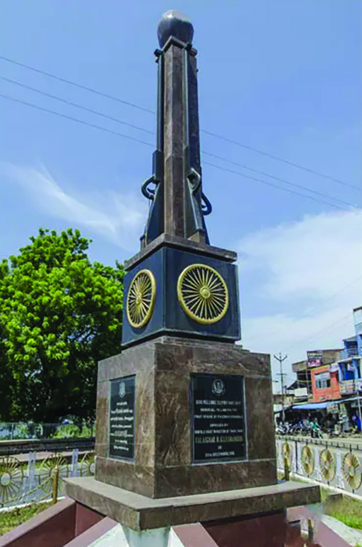
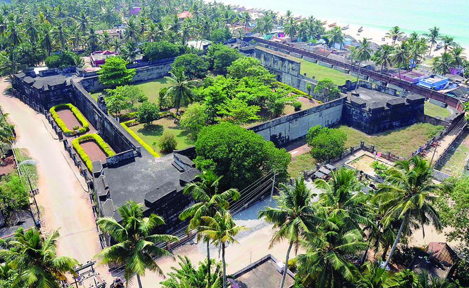

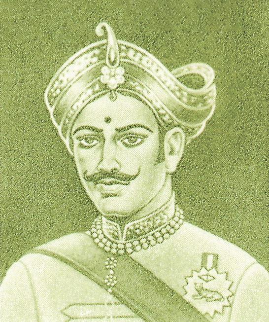
Invasion
and Resistance
21
Fig. 1.11 l Vellore Mutiny Memorial
The Vellore Mutiny in
Tamil Nadu was the
first military revolt
against the British
in India. The revolt
was led by Indians
in the British army.
Changes in the dress
code of Indian soldiers
by the English East
India Company
were the main cause
of the mutiny. The
1806 mutiny was
suppressed by the
British, but the Vellore
Mutiny inspired the
subsequent
anti-British uprisings.
Vellore Mutiny
the struggle against the British.
As a renowned protector of his
people, Kattabomman had a good
relationship with his people. The
poligar was also responsible for
collecting taxes from the people.
The ruler of Panchalam Kurichi
surrendered to the British, but
Kattabomman
was
not
willing
to do so. The British further burdened the people
by increasing the existing taxes. The fact that
Kattabomman questioned the tax collection by the
British made him their enemy. Kattabomman and the
Marut Pandya brothers who were poligars of Sivagangai
fought against the British and died as heroes.
The Attingal Revolt
The Attingal Revolt of 1721 was the first organised
rebellion against the British in India. The British were
constantly trying to create chaos in the Attingal region
by interfering in the pepper trade, in internal affairs,
and created communal hatred among the people. The
British tried to repeat the practice of giving rewards to
the ruling Attingal Rani every new year, in 1721 as well.
But some of the landlords resisted this because they
were afraid that it could cause some kind of danger.
Fig. 1.12 l Anchuthengu Fort
Page 22

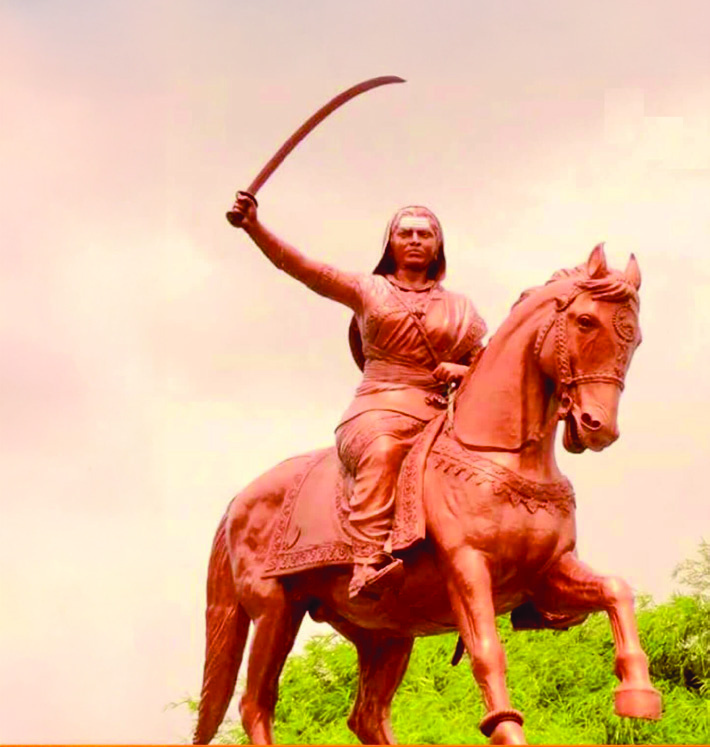
Social Science
Standard
22
Fig. 1.13 l
Kittur Rani Chennamma
Complete the flow chart by analysing the revolts that took place in
India against the British.
Anti-British revolts
Sannyasi-
Fakir
rebellion
Santhal
rebellion
Popular
rebellion
Peasants’
rebellions
Poligar
rebellion
Kittoor
rebellion
A British contingent of one hundred and forty led by Gifford
arrived to give gifts to the Attingal Rani, despite the opinion
that it was sufficient to give gifts only through the landlords.
This move led to a big conflict. The contingent was attacked
and killed by the locals without any distinction of class,
colour, caste and religion. Moreover, the British fort at
Anchuthengu was surrounded and blockaded. The Attingal
Revolt is significant as the first organised popular uprising
against the British rule in Kerala.
The Onward Movement of Women
British policies also affected the rulers of India. Kittoor
Rani Chennamma was a brave woman who took up arms
and fought against the British. Kittur was a princely state
in Karnataka that recognised the supremacy of the Maratha
rule. When the British won the Third Anglo-Maratha War,
the Kittur area came under the control of the English East
India Company. The ruler of Kittur was Sivalinga Rudradesai.
After his death, Chennamma, his widow, decided to adopt a
boy. This was prevented by the English East India Company
which annexed Kittur to British India. Provoked by this, Rani
Chennamma of Kittoor declared war against the British.
Rani Chennamma died in 1829 while in British custody.
Page 23

Invasion
and Resistance
23
“When Kunwar and his group started moving towards the middle
of the river, the English soldiers started firing from the land.
Kunwar Singh’s left arm was shot and was broken and hung.
Kunwar Singh, the hero did not hesitate to take the dagger that
was shielded in his waist and cut off his useless arm. “I offer this to
Mother Ganga,” he said and threw the severed arm into the river.
K.S.I.C.L - History of National Freedom Struggle for Children
Fig. 1.14 l Kunwar Singh
The Storm That Shook the British Empire
These are the words about the bravery of Kunwar Singh who
fought against the British in the revolt of 1857.
Why did Kunwar Singh fight against the British?
You must have realised that there were isolated struggles in
many parts of India against the English East India Company.
The Company troops suppressed all such struggles. What
happened in 1857 was an organised rebellion in India against
British imperialism. Therefore, historians consider this revolt
as India’s first struggle for independence. It was the first
anti-British struggle in which various sections of the society,
including natives, peasants, artisans, native kings, soldiers,
and landlords took part. What could be the factors that forced
these different groups to participate in the rebellion?
Administrative reforms implemented by the British led to
the revolt. Two such British policies included the Subsidiary
Alliance Policy and the Doctrine of Lapse.
The Subsidiary Alliance Policy
The Subsidiary Alliance Policy was a plan implemented by
Lord Wellesley who was the then Governor-General, for the
expansion of the British empire in India and to strengthen its
sovereignty. According to this, the princely states entering
into a military alliance with the British had to follow certain
conditions.
l The princely state which entered into the Subsidiary
Alliance Policy should keep one unit of the army of the
Company permanently within its kingdom.
l All the expense of the Company’s troops was to be borne
by the allied king.
Page 24
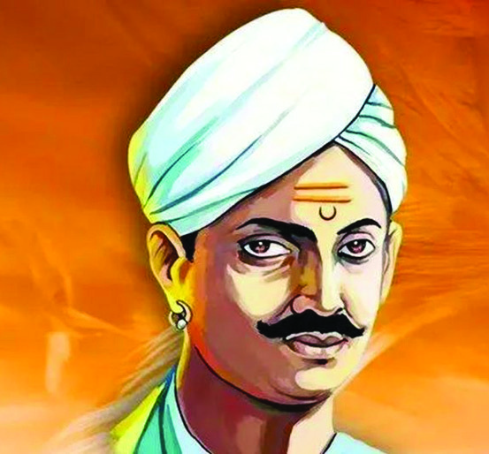


Social Science
Standard
24
l The allied king must not enter into alliances with other
European countries without the Company’s approval.
l No action should be taken by the allied king without
consulting the British Governor-General.
l The allied King must provide accommodation for a British
Resident in his country.
l If these conditions were violated, the princely states
would be annexed by the British.
The Doctrine of Lapse
If the ruler of a princely state died without male heirs, there
was a practice of finding a boy from another family as the
heir. However, the king’s power to adopt was abolished
under the Doctrine of Lapse enacted by Lord Dalhousie,
the British Governor-General. In the absence of an heir, the
princely state would fall under the control of the English
East India Company.
Many princely states were annexed to British India under
these two policies. The princely state of Awadh (Oudh) was
also annexed to British India on charges of misrule.
Fig. 1.15 l Mangal Pandey
Fig. 1.16 l
Jhansi Rani Lakshmibai
Fig. 1.17 l Bahadur Shah II
Discuss how the Indian princely states were
captured by the British with the Subsidiary
Alliance Policy and the Doctrine of Lapse.
Another reason for the Revolt of 1857 was the dissatisfaction
of the Indian soldiers of the East India Company with the
British.
Although they were as capable as the British soldiers, Indian
soldiers were paid less and were provided poor food and
accommodation. It was in this disgruntled situation that
the company supplied the new type of Enfield guns to the
soldiers. Its cartridges had a greased paper cover. This cover
had to be bitten off to use the gun. It was rumoured among
the soldiers that this cover was smeared with a type of grease
made from cow and pig fat, which was offensive to their
religious beliefs. Mangal Pandey, a soldier at Barrackpore,
was the first to protest against this. Mangal Pandey was
Page 25
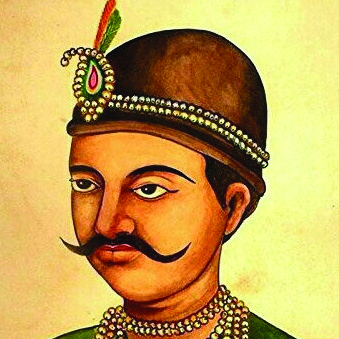
Invasion
and Resistance
25
executed by the British on 8 April 1857 for assaulting a British
soldier who forced him to load his gun.
The rebellion of 1857 started in Meerut, Uttar Pradesh. After
the assassination of Mangal Pandey, Indian soldiers came
to Delhi and proclaimed the Mughal ruler Bahadur Shah II
as the Emperor of India. Apart from the soldiers, rulers of
princely states who had lost their powers, peasants and other
people participated in the rebellion in many parts of North
India. Within months, the British suppressed the rebellion
everywhere. Many Indians were shot dead. Many were
cannoned to death. Thousands who were alive were hanged
upside down from branches of trees. Out of the one and a half-
lakh killed in the riots in Oudh alone, one lakh were civilians.
The unity of different sections of the people of India was able
to resist strongly the brutal oppression of the British. Even
where there were no riots, the insurgents had the support of
the common people. The real strength of the rebellion was
Hindu-Muslim unity.
Did you read the story of Kunwar Singh? Many patriots like
this fought against the British. Let us get to know some of
them.
Venue of the
rebellion
Persons who led the
rebellion
Features
Delhi
Bahadur Shah II
l the rebels declared him the
Emperor of India
l after the revolution, the British
exiled him to Rangoon
General Bakht Khan
l military general of Bahadur Shah II
Jhansi
Rani Lakshmibai
l ruler of Jhansi
Kanpur
Nana Sahib
l ruler of Maratha
Tantia Tope
l Nana Sahib’s army chief
l practised guerilla warfare
Lucknow
Begum Hazrat Mahal
l ruler of Oudh
Ara in Bihar
Kunwar Singh
l farmer lord of Jagdishpur
Fig. 1.18 l Nana Saheb
Fig. 1.19 l Tantia Tope
Fig. 1.20 l Begum Hazrat Mahal
Page 26


Social Science
Standard
26
The
Rebellion
of 1857 -
Film and
Literature
The rebellion of 1857 had certain limitations.
l the rebellion was confined to a few parts of northern
India
l the rebellion had no organised leadership
l the Company army had more improvised military and
organisational skills than the mutineers
l the middle class in India generally did not support the
rebellion
l a section of princely rulers abstained from the rebellion
Though the revolt of 1857 was suppressed by the British,
it had a significant impact on later Indian history. Let us
check what they are.
l the English East India Company’s rule in India ended
l the administration of India came under the direct
control of the British Queen
l the position of Governor-General was replaced by
Viceroy
l it inspired India’s later national movements
Foreigners who came for trade gained political power in
India. The subsequent national struggles were fuelled
by the resistance and movements of people in various
regions of India against this.
1857 by Mohan Sinhe;
Mangal Pandey :
The Rising directed
by Ketan Mehta;
Krish Jagarlamudi’s
Manikarnika: The
Queen of Jhansi were
made against the
backdrop of the 1857
revolt. Mahasweta
Devi’s novel Jhansi
Rani, Malayattur
Ramakrishnan’s novel
Amritham Thedi were
also written against
the backdrop of the
revolt in 1857.
Extended Activities
l Read the accounts of foreigners who visited India before the Portuguese and
find out their itineraries, travelogues, etc. and prepare a magazine.
l Prepare an article by gathering news and pictures from various sources on
peasant, tribal and women’s movements in various parts of India against the
British.
l Create a digital album of 1857 revolt centres and leaders.
l Prepare a screenplay for a documentary based on the anti-British revolts in India.